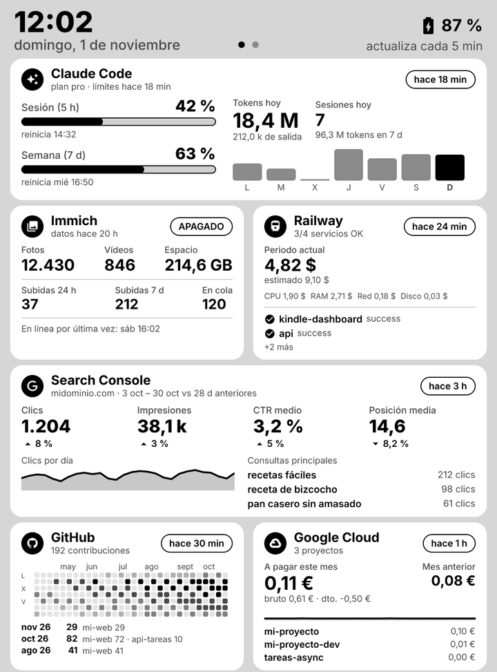
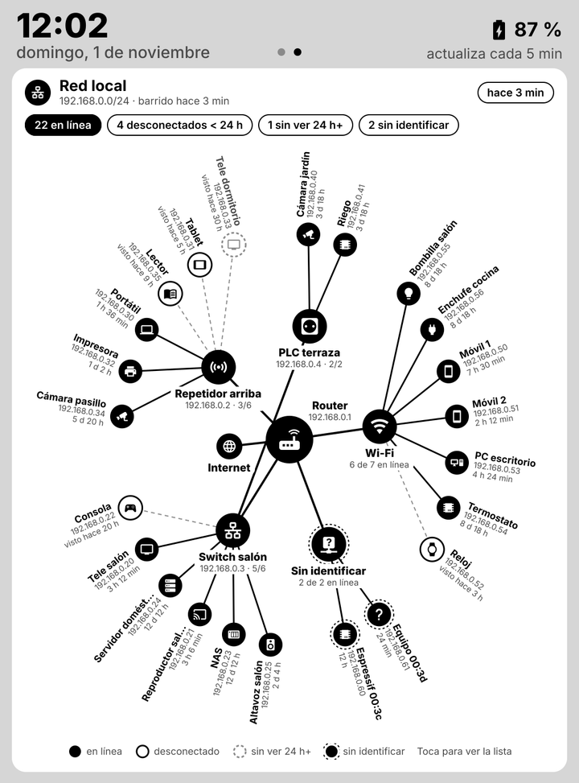
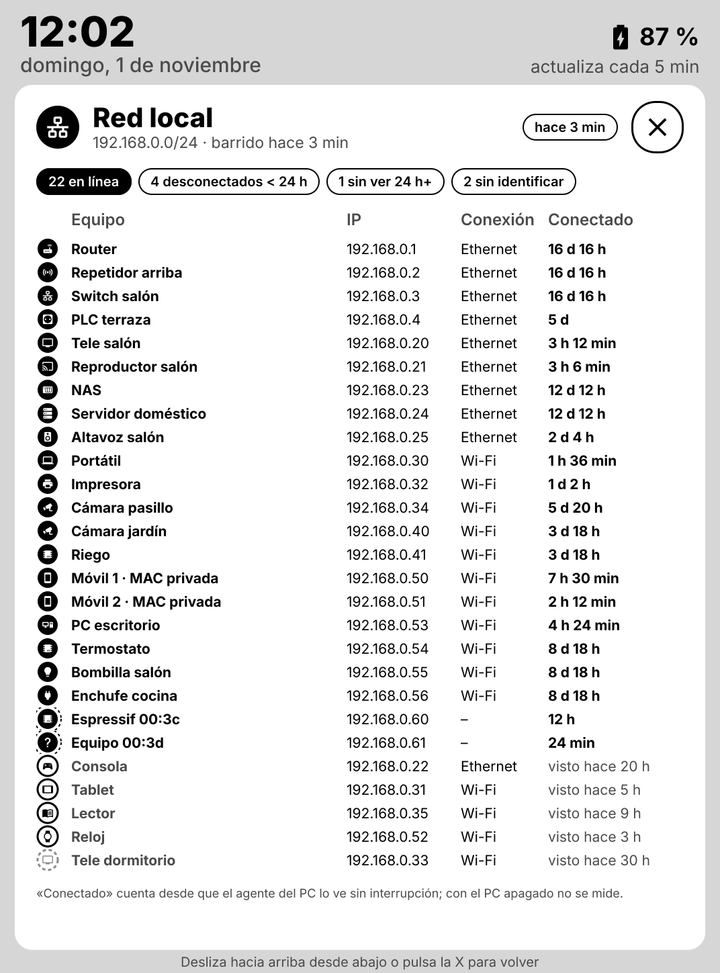
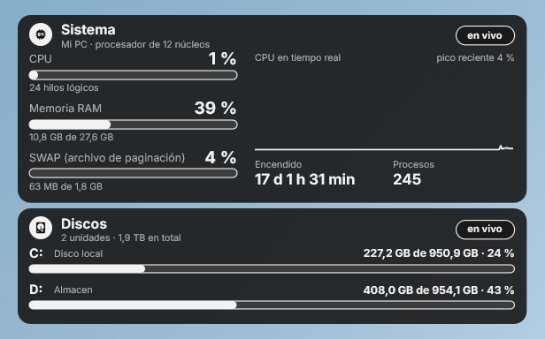
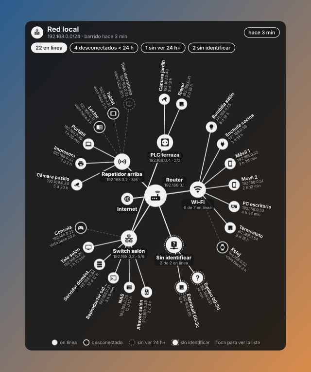

Inkboard
Dashboard con estilo de tinta electrónica para un Kindle con jailbreak, el navegador y el escritorio de Windows (Rainmeter): límites y tokens de Claude Code, Immich, Railway, Search Console, GitHub, gasto de Google Cloud, un mapa de los dispositivos de la red local y la telemetría del PC.
| Pantalla 1: métricas | Pantalla 2: red local | Detalle de la red |
|---|---|---|
 |
 |
 |
| Escritorio: telemetría del PC | Escritorio: red local | Escritorio: métricas |
|---|---|---|
 |
 |
 |
Capturas generadas con npm run preview y datos de ejemplo, salvo la de telemetría, que es del widget real.
Qué hace
- Tarjetas con lo que importa de cada servicio; al tocar una se abre su detalle a pantalla completa.
- Varias pantallas: se desliza a izquierda y derecha, con un indicador de página en la cabecera.
- Red local: diagrama radial con el router en el centro, repetidores y switches alrededor y cada equipo en el anillo exterior, con su icono de tipo, IP y tiempo conectado. Sin credenciales del router. Explicado en docs/red-local.md.
- Web (
/web) con los mismos dashboards, protegida con su propia clave. - Widgets de escritorio (Rainmeter) con fondo transparente, en tema claro u oscuro: métricas, red local y telemetría del PC (CPU, RAM, SWAP y discos, leída del propio equipo cada segundo), que se pueden ver a la vez. Explicado en docs/rainmeter.md.
- Pantalla de sin conexión en el Kindle con la causa (sin red, clave incorrecta, servidor caído) y los pasos para arreglarlo.
Cómo funciona
PC (cuando está encendido) Servidor (Railway o el propio PC) Kindle
agent/agent.mjs ──POST /api/ingest──▶ server/index.js ── data/state.json
· límites y tokens de Claude Code · GitHub, Search Console, Railway,
· Immich gasto de Google Cloud (cada N min)
· dispositivos de la red local · GET /dash.png ◀──────── cada 5 min ──── eips
· GET /web, /widget.png
- El servidor guarda el último dato de cada fuente en un JSON y dibuja la imagen al pedirla: tarjetas en
satori y PNG de 8 bits en gris con sharp,
1072×1448, que el Kindle pinta con
eipssin conversión. - El agente del PC recoge lo que solo existe en local y lo envía con un token. Los secretos locales (token OAuth de Claude Code, clave de Immich) no salen del PC: al servidor solo llegan las cifras.
- El Kindle descarga la imagen cada pocos minutos con
curldesde una extensión de KUAL y envía los toques como coordenadas; el servidor decide qué se ha tocado.
Puesta en marcha
Necesitas Node.js 22 o superior en el PC (y en el servidor, si no es el mismo) y un Kindle con jailbreak, KUAL y acceso por SSH.
npm install
copy .env.example .env # claves del servidor y tokens de cada fuente
npm start # servidor en http://localhost:3000
npm run preview # genera out/preview*.png con datos de ejemplo
Después, cada parte tiene su guía:
| Guía | Contenido |
|---|---|
| Servidor | Railway o PC local, variables, página web, memoria |
| Fuentes de datos | GitHub, Search Console, gasto de Google Cloud y Railway |
| Agente del PC | Claude Code, Immich, red local y tarea programada |
| Red local | Cómo se descubren los equipos, inventario y límites |
| Kindle | Extensión KUAL, gestos, varias pantallas y detalle |
| Widgets de escritorio | Pieles de Rainmeter: métricas, red local y telemetría del PC |
Estructura
server/ servidor HTTP: recogida de las fuentes en la nube, estado y render
collectors/ GitHub, Search Console, Railway y facturación de Google Cloud
render/ tarjetas, detalles, diagrama de red y primitivas de UI para satori
agent/ agente del PC (Claude Code, Immich, red local) y su tarea programada
kindle/ extensión KUAL: bucle de descarga, gestos y pantalla de error
Rainmeter/ pieles de escritorio (Inkboard y Telemetria) y sus instaladores
docs/ guías y capturas
tools/ vista previa HTML de la documentación y generadores de la piel de telemetría
Documentación en el navegador
Cada .md tiene al lado su .html (el README de la raíz, index.html) para leerla como páginas web:
npm install # solo la primera vez
npm run docs # vuelve a generar los .html tras cambiar algún .md
Probado con
| Componente | Versión |
|---|---|
| Kindle | Paperwhite 3 (7.ª generación), firmware 5.16, 1072×1448 a 300 ppi |
| Node.js | 22 o superior |
| Agente y widget | Windows 11 |
Créditos
- Tipografía Inter, de Rasmus Andersson, bajo la
SIL Open Font License 1.1 (paquete
@fontsource/inter). - Iconos de Material Design Icons (
@mdi/js), bajo licencia Apache 2.0. - satori (MPL 2.0) y sharp (Apache 2.0) para el render.
- En el Kindle, los gestos y la pantalla de error usan el LuaJIT y FBInk que trae KOReader (AGPL 3.0); no se incluyen en este repositorio.
Licencia
MIT.